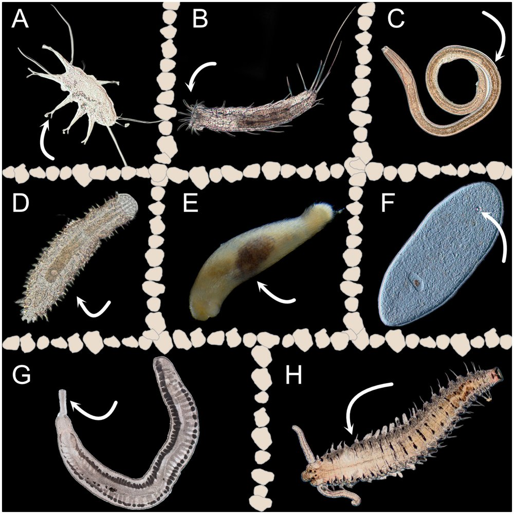
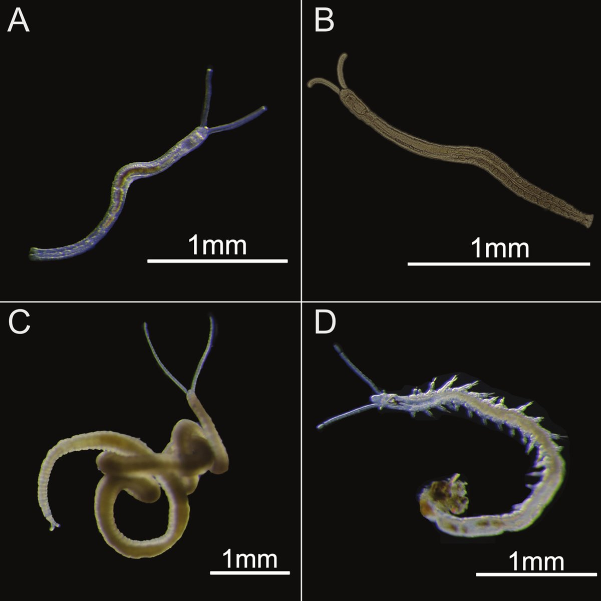
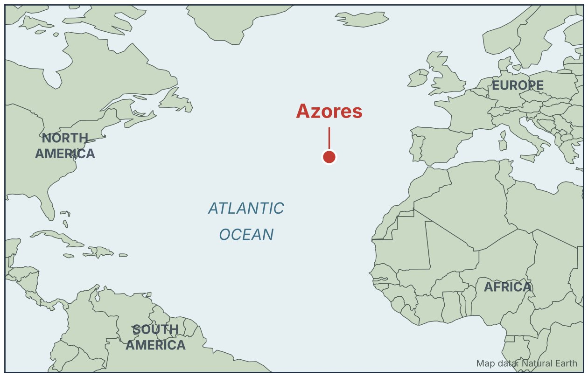
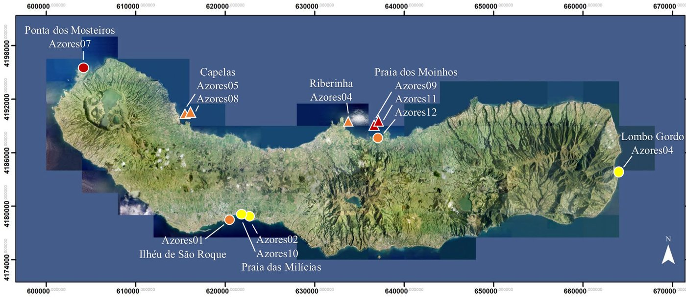
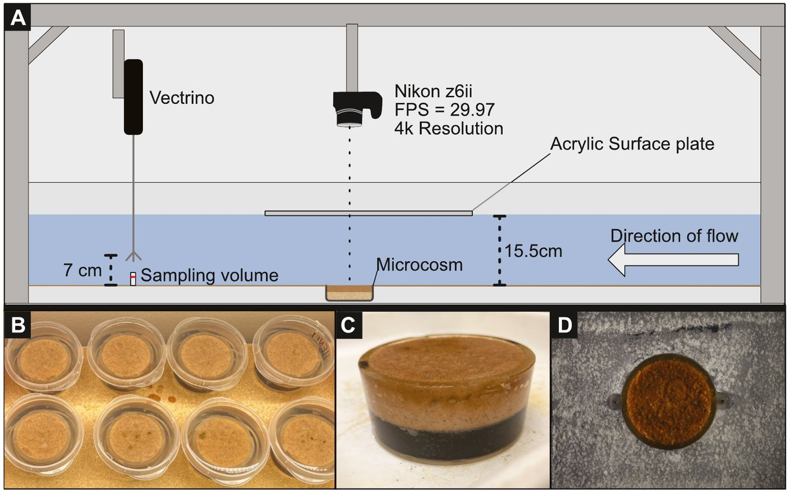
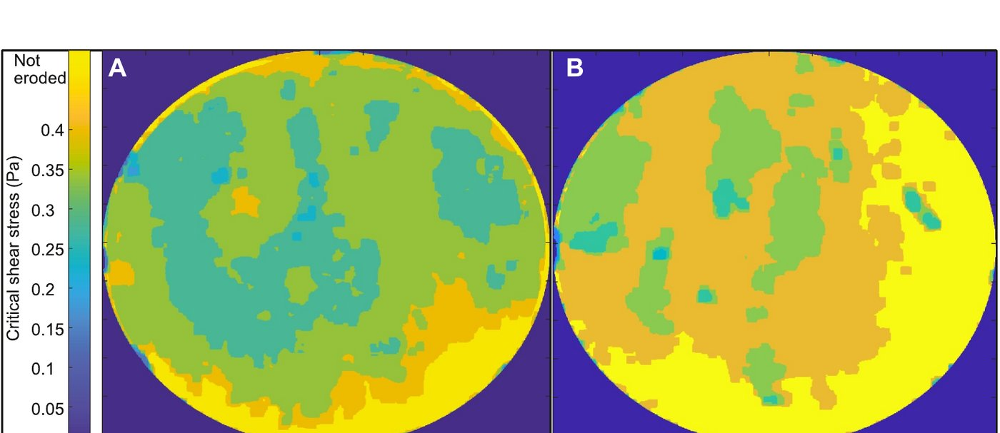

Research entry 01
Meiofauna: Life among the sand grains
Meiofauna are animals smaller than a millimeter that live in the spaces between sand grains. Some beaches hold thousands of them in a teaspoon of sand. To a meiofaunal worm, each grain is a boulder, and the seafloor is a dark, shifting maze full of water.
Nearly every major animal group has members living down here: worms, crustaceans, snails, tardigrades, and groups found nowhere else, such as gastrotrichs and kinorhynchs ("mud dragons"). I study how their bodies let them live in sand, how many kinds there are, and what they do to the sediment around them.

Ballentine et al. 2025, Frontiers for Young Minds
- 01Organismal workmoving through a mazep. 002-B
- 02Diversity workwho is down therep. 002-C
- 03Ecology workwhat they do to sandp. 002-D
Organismal work
p. 002-BQ: How do you find your way through a maze you can't see?
Sand is opaque and dark, so meiofauna cannot navigate by sight. Many interstitial worms carry a pair of long, flexible feelers on their heads called palps. Watching four species from three worm families crawl through clear sand, I found that the palps probe ahead nearly the entire time a worm is moving. At a fork, the worm sends its palps down each branch, then follows one. The palps travel much farther than the head does, so the worm surveys the pores around it before committing its body to a path.
This points to palps working as touch sensors for mapping pore space and avoiding dead ends. It also raises a question: how do the many interstitial animals with no palps at all find their way?

Two protodrilids, Pharyngocirrus eroticus, and Protodorvillea recuperata. Ballentine & Dorgan 2023, Biological Bulletin
Diversity work
p. 002-CQ: How many kinds of animals live in a handful of sand?
Tens of thousands of meiofauna species have been described, and likely as many again have not. Many are hard to tell apart under a microscope, because unrelated animals that live between grains tend to converge on the same long, thin, sticky body plan. Some look-alike "species" from opposite sides of the world turn out to differ genetically more than humans and chimpanzees do.
In 2019 I joined an international workshop in the Azores, a remote and little-studied archipelago in the middle of the Atlantic. Experts identifying animals by eye recorded about 180 kinds. Reading the DNA in the same sediments turned up 480 distinct genetic types spanning 14 animal phyla, led by copepods, worms, and nematodes. Medium-grained sand held more kinds than coarse sand. The DNA approach was especially good at finding easily overlooked groups such as rotifers, though it missed some animals that the microscope caught, so the two methods work best together.

Map data: Natural Earth (public domain)

Colors show sand type (yellow fine, orange medium, red coarse); circles are intertidal, triangles subtidal. Leasi et al. 2026, Marine Biodiversity
Ecology work
p. 002-DQ: Do tiny animals change how the seafloor holds together?
Diatoms (microscopic algae) living on the seafloor ooze a sticky glue that binds the top layer of sand into a thin biomat. Biomats take stronger currents to erode, which matters for predicting how sand moves in coastal waters that ships navigate and scientists map. Meiofauna graze on both the diatoms and their glue.
Working with the U.S. Naval Research Laboratory, we grew diatom biomats on sand in small cores with no, low, or high numbers of meiofauna, then eroded each core in a flow tunnel while filming from above.

Ballentine et al. 2026, JGR: Oceans
Biomats never washed away all at once. They broke off in chunks across a wide range of current strengths, and some patches held on long after their neighbors failed. Older mats were tougher (two-week-old mats lost 56% less than one-week-old mats), and cores with many meiofauna lost 22% less mat than cores with none. The grazers, together with the diatoms, made the sand more stable.
We also tested xanthan gum, a thickener labs often use as a stand-in for natural glue. It slowed erosion, but sand still left grain by grain rather than in chunks, so it does not behave like a living biomat. Better predictions of how coasts erode may need to account for this patchy, living layer.
Meiofauna matter beyond sand stability. They recycle nutrients by eating dead material, they feed young fish and crabs, and their communities shift with pollution (after an oil spill in the Gulf of Mexico, meiofauna diversity dropped and took about a year to recover), which makes them useful indicators of seafloor health.

Ballentine et al. 2026, JGR: Oceans
Read more
the papers behind this page- 2026Ballentine W.M., Dohner S.M., Dorgan K.M., Penko A. Microalgae and meiofauna induce heterogeneous biostabilization in marine sediments. Journal of Geophysical Research: Oceans 131: e2025JC023521. doi:10.1029/2025JC023521
- 2026Leasi F., et al. (incl. Ballentine W.M.). High meiofaunal diversity in the Azores revealed through DNA metabarcoding. Marine Biodiversity 56(1): 6. doi:10.1007/s12526-025-01615-z
- 2025Ballentine W.M., Roberts N.G., Yap-Chiongco M.K., Halanych K.M., Kocot K.M., Dorgan K.M. Life among the sand grains. Frontiers for Young Minds 13: 1472123. doi:10.3389/frym.2025.1472123 written for kids
- 2023Ballentine W.M., Dorgan K.M. Locomotory palp function in interstitial annelids. Biological Bulletin 244(1): 51-62. doi:10.1086/724580
- 2021Jörger K.M., et al. (incl. Ballentine W.M.). Meiozores 2019: Exploring the marine meiofauna of the Azores. Açoreana 11: 17-41.